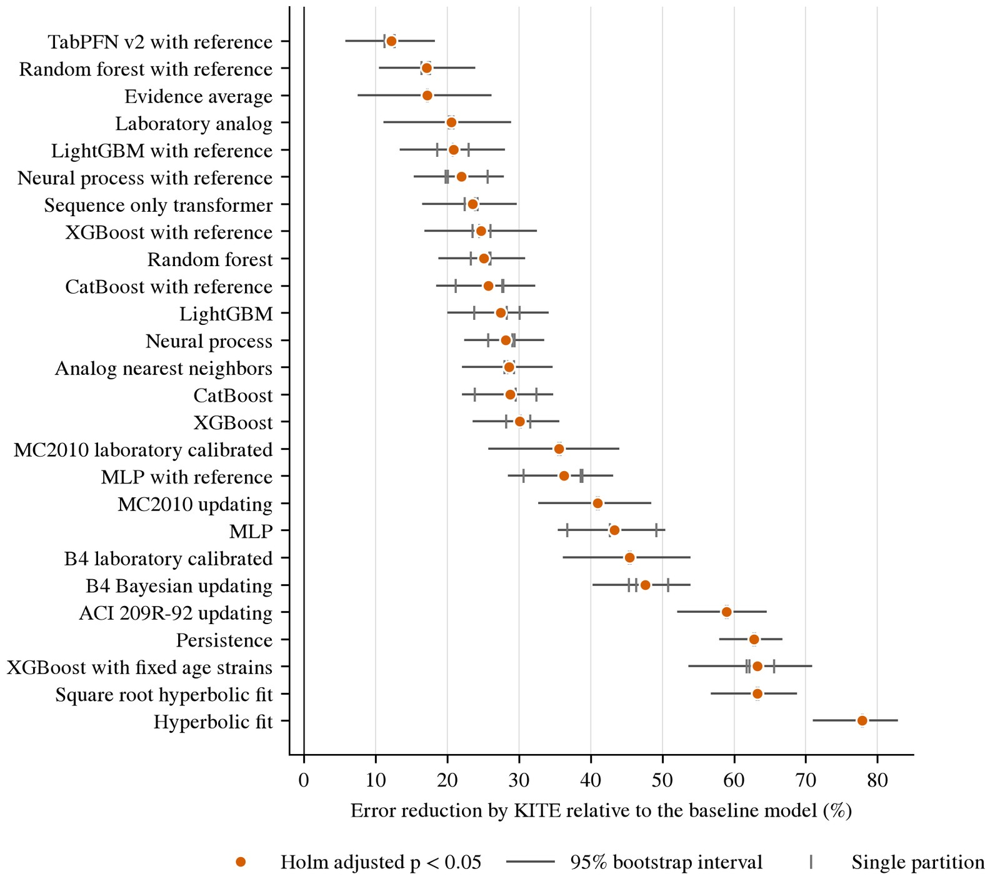
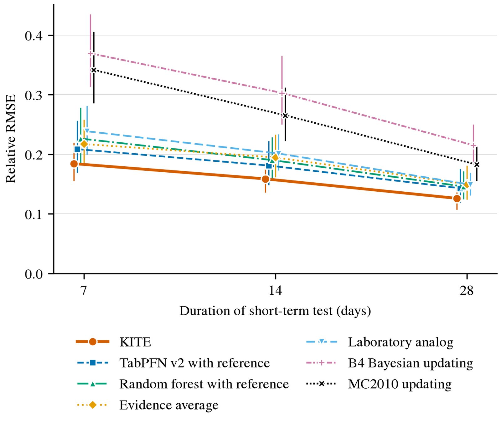
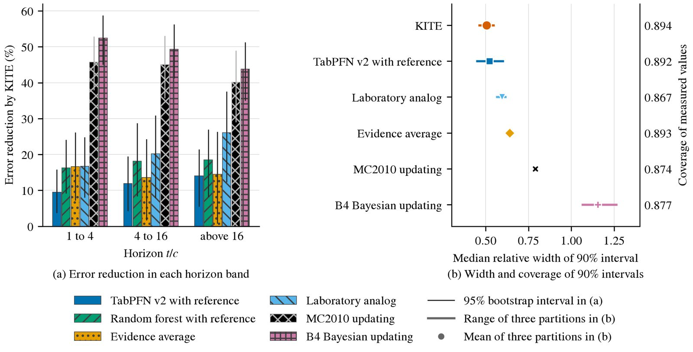
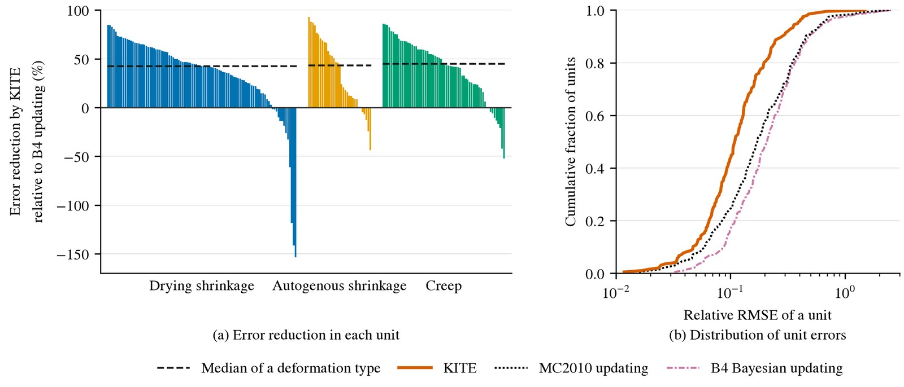
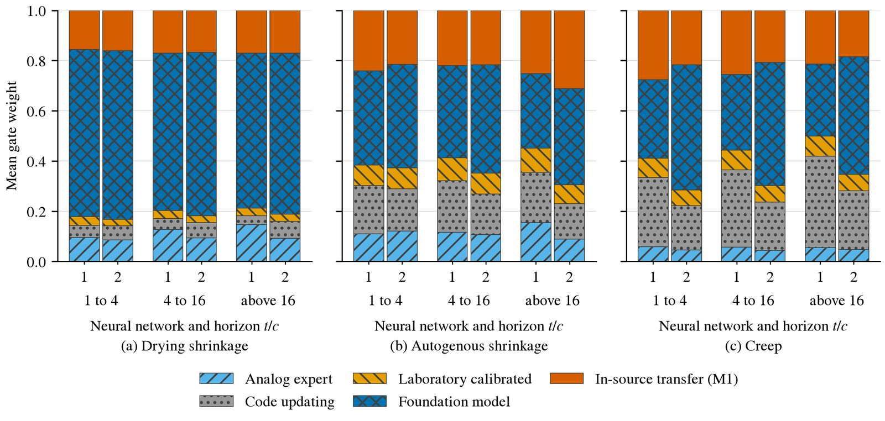

Explore the predictions
Drag the divider to compare the measured curve with the KITE prediction after 14 days. Examples sit at the 10th, 25th, 50th, 75th and 90th percentile of the KITE error.
◂▸
filled: short term data, open: measured later
dashed: control mixture curves
line: KITE prediction

Error reduction by KITE relative to all 26 baselines.

Error by duration of the short term test.

Error over the horizon and interval coverage.

Error reduction by KITE in each laboratory unit.

Mean gate weights of two neural networks by evidence source.